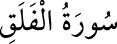

113- el-FELAK SÛRESİ
Sûre ismini, ilk âyetinde geçen ve “sabah” mânâsına gelen “felâk” kelimesinden
almıştır. Nâs sûresiyle birlikte “Mukaşkışeteyn (şirkten uzaklaştıranlar)” ismiyle
de anılmaktadır. Aynı sûrelere başlarındaki “eûzü” kelimelerinden dolayı
“Muavvizeteyn” ismi de verilmiştir. Beş âyet olup Medîne’de nâzil olmuştur.